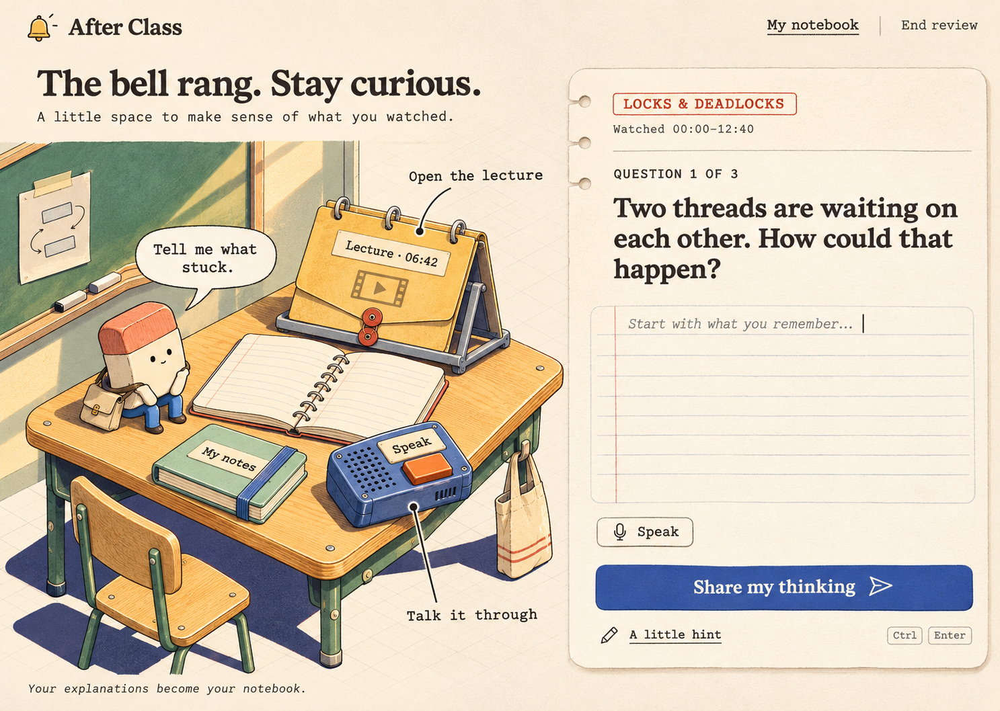
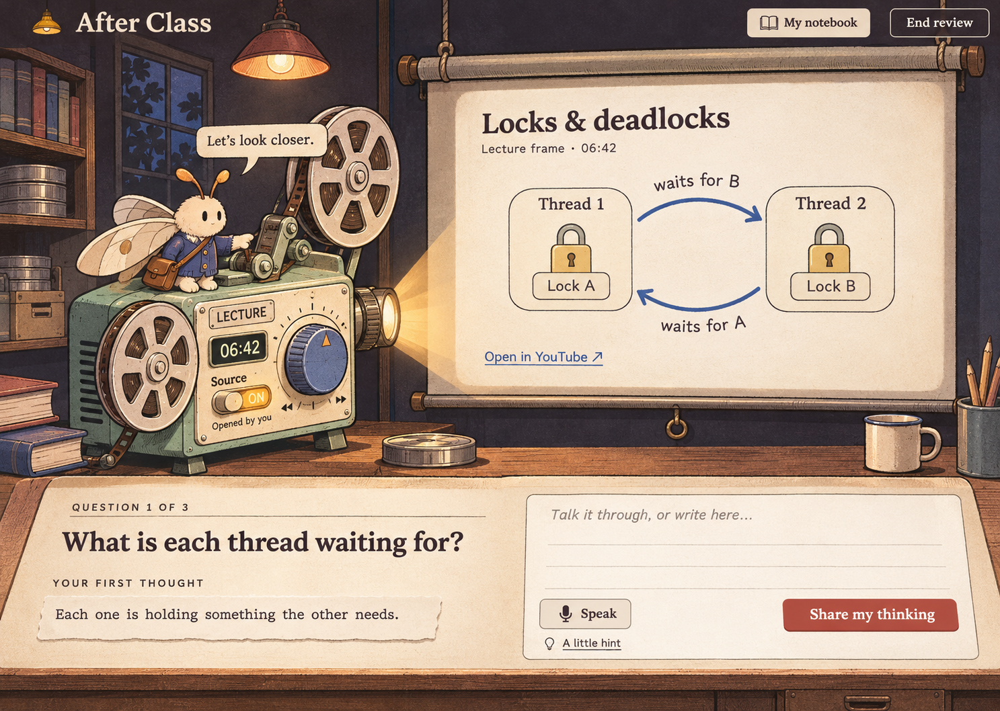
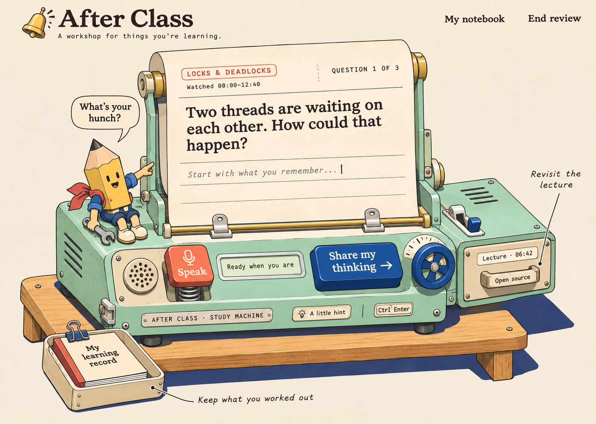

Approved scenes, companions, and conversation/source component layout. These are static reference images; production UI and animation assets still need implementation.
Read the implementation handoff · Design approval: November 3, 2026


